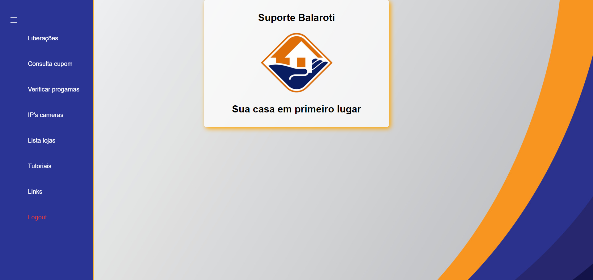
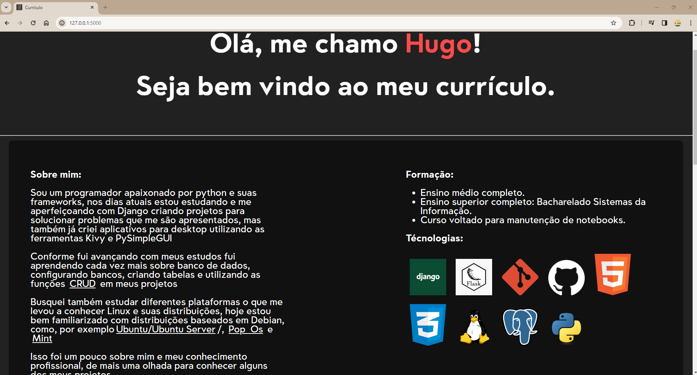
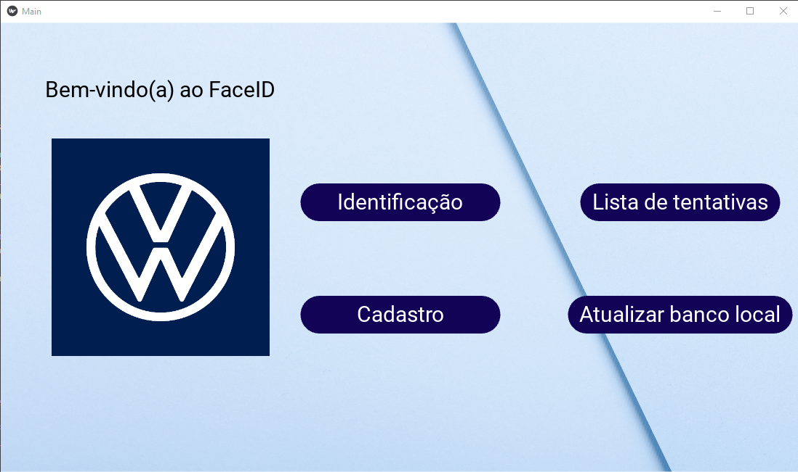

Olá, me chamo Hugo!
Seja bem vindo ao meu currículo.
Sobre mim:
Sou um programador apaixonado por python e suas frameworks, nos dias atuais estou estudando e me aperfeiçoando com Django criando projetos para solucionar problemas que me são apresentados, mas também já criei aplicativos para desktop utilizando as ferramentas Kivy e PySimpleGUI
Conforme fui avançando com meus estudos fui aprendendo cada vez mais sobre banco de dados, configurando bancos, criando tabelas e utilizando as funções CRUD em meus projetos
Busquei também estudar diferentes plataformas o que me levou a conhecer Linux e suas distribuições, hoje estou bem familiarizado com distribuições baseados em Debian, como, por exemploUbuntu/Ubuntu Server/, Pop_Os e Mint
Isso foi um pouco sobre mim e meu conhecimento profissional, de mais uma olhada para conhecer alguns dos meus projetos
Formação:
- Ensino médio completo.
- Ensino superior completo: Bacharelado Sistemas da Informação.
- Curso voltado para manutenção de notebooks.
Técnologias:
{% for image in assets %}Projetos:
Suporte Balaroti
Com o objetivo de auxiliar e equipe de suporte, desenvolvi este sistema web para automatizar processos manuais como por exemplo procurar programas caídos nos servidores de cada loja ou informações e consultas
(Desenvolvido em Python - Django)
Mundo dos Brinquedos

Projeto desenvolvido para a empresa Mundo dos Brinquedos para divulgar seus serviços
(Desenvolvido em Python - Django)
Currículo
Desenvolvi esse site para divulgar meus conhecimentos e projetos em que já trabalhei
(Desenvolvido em Python - Flask)
Reconhecimento facial
Este projeto foi desenvolvido através de uma parceria com a Faculdade e a empresa VolksWagen onde surgiu uma necessidade de ter o controle de acesso na sala designada para área de prototipagem dos equipamentos fabricados pela mesma. Com essa demanda foi desenvolvido esse projeto onde é feito o controle de acesso através de reconhecimento facial
(Desenvolvido em Python - Kivy)